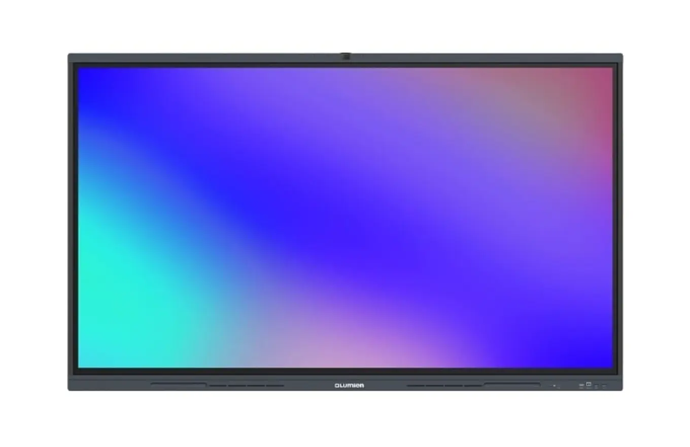

Интерактивные панели и комплексы
Интерактивные панели Lumien – передовое решение для образовательных и деловых пространств, предлагая возможности для совместной работы и эффективной презентации. Они сочетают высокое качество изображения, интуитивный сенсорный интерфейс и широкие функциональные возможности, что делает их идеальным выбором для интерактивного обучения и совещаний. Различные размеры и разрешения экрана позволяют адаптировать панели Lumien под разнообразные требования, обеспечивая четкость и яркость изображения. Интерактивные панели Lumien повышают вовлеченность аудитории, делая рабочий процесс динамичным и продуктивным, предоставляя инструменты для совместной работы и обмена идеями. Это инновационное решение для интерактивного взаимодействия.